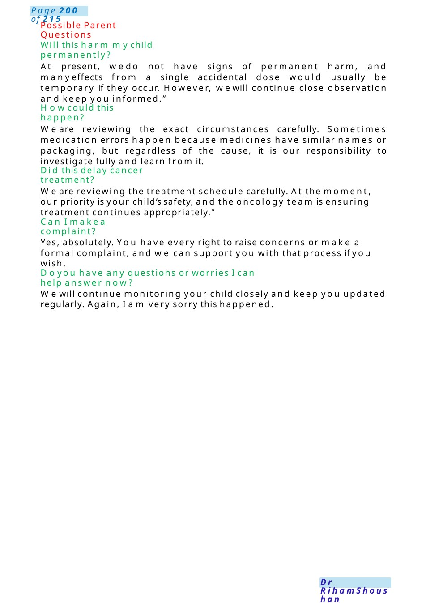

Wrong Breast milk
Scenario: Apologising to parents after haloperidol was mistakenly given instead of allopurinol to a child with cancer. Setting: Youare the paediatrics trainee speaking to the parent in a private quiet room.
Scenario Summary
Scenario: Apologising to parents after haloperidol was mistakenly given instead of allopurinol to a child with cancer. Setting: Youare the paediatrics trainee speaking to the parent in a private quiet room.
Full Original Scenario

Haloperidol instead of Allopurinol
Scenario: Apologising to parents after haloperidol was mistakenly given instead of allopurinol to a child with cancer.
Setting: Youare the paediatrics trainee speaking to the parent in a private quiet room.
Candidate: Hello Mr/Mrs Ahmed, I’m Dr ......, one of the doctors caring for your child. Before we begin, is this a good time to talk? Would you like another family member or support person to be present? I wanted to speak with youpersonally because I need to discuss an important issue regarding your child’s medication.
I amso sorry to tell you that , there has been a medication error involving one of the medicines your child received.
Your child was supposed to receive allopurinol, which is a medicine we use in children receiving cancer treatment to help protect the body from complications caused by rapid breakdown of cancer cells. Haloperidol was given instead by mistake because the medication names sounded/looked similar.
I am deeply sorry this happened. I understand this is extremely distressing, especially while your child is already going through cancer treatment, and wetake this very seriously.
The reassuring thing is that your child is currently stable and in a good general condition. Assoon as the error was identified, weassessed your child carefully and started close monitoring.
Haloperidol is a medication usually used for different medical conditions, and it can sometimes cause side effects such as: Sleepiness, Stiffness or abnormal movements, Agitation, Or changes in heart rhythm.
At the moment, your child is not showing serious concerning effects, but we will continue careful monitoring.”
Wehave already: Stopped the incorrect medication, Informed the senior oncology consultant and pharmacy team, Monitored vital signs and neurological status, and arranged any necessary blood tests or heart tracing monitoring if needed.
Wehave also ensured your child receives the correct medication moving forward. Webelieve it is very important to be open and honest whenever something like this happens. That is whyI wanted to explain clearly what occurred, what we are doing now, and answer all your questions.
We are also formally reviewing howthis error happened so wecan reduce the risk of similar incidents happening again. This includes reviewing medication prescribing, dispensing, and checking systems. I understand you may feel upset, frightened, angry, or disappointed. Those feelings are completely understandable.

Possible Parent Questions
Will this harm mychild permanently?
At present, wedo not have signs of permanent harm, and manyeffects from a single accidental dose would usually be temporary if they occur. However, wewill continue close observation and keep you informed.”
Howcould this happen?
We are reviewing the exact circumstances carefully. Sometimes medication errors happen because medicines have similar names or packaging, but regardless of the cause, it is our responsibility to investigate fully and learn from it.
Did this delay cancer treatment?
We are reviewing the treatment schedule carefully. At the moment, our priority is your child’s safety, and the oncology team is ensuring treatment continues appropriately.”
Can I makea complaint?
Yes, absolutely. You have every right to raise concerns or make a formal complaint, and we can support you with that process if you wish.
Doyou have any questions or worries I can help answer now?
Wewill continue monitoring your child closely and keep you updated regularly. Again, I am very sorry this happened.

Apology Acyclovir Overdose
Scenario: Apologising to parents after an extra dose of acyclovir wasgiven by mistake to a child with renal impairment.
Setting: Youare the pediatric trainee speaking with the parent in a quiet room.
Candidate: Hello Mr/Mrs Ahmed,I’m Dr......, one of the doctors caring for your child. Is this a good time to talk? Would you like another family memberor support person with you?
I wanted to speak with you because I need to explain something important regarding your child’streatment. there has been a medication error involving your child’s acyclovir treatment.
Mother: Howdid this happen
Candidate: We are carefully reviewing the sequence of events to understand exactly how the extra dose was given. Medication errors can happen due to human or system factors as the process for giving a child medicine happened through series of events, someonewrite the medicine dosage, others prepare and another one give the medicine. We already started our investigations, informed our practice manager and quality team. also, an incident report has been started. and it is important we learn from them properly.
Mother: What is this, Medicine?
Candidate: Acyclovir is medicine we are using to treat viral infection. Your child has underlying kidney problems, so the dose should be carefully adjusted according to kidney function. I amso sorry to tell you that, an additional dose was given by mistake. I amvery sorry this happened.
I understand this maybe worrying for you, especially because of your child’s kidney condition, and wetake this situation extremely seriously.”
Thereassuring thing is that your child is currently stable and in a goodgeneral condition. Weassessed your child immediately after identifying the error, and at the moment there are no signs of serious complication
Mother: Will this damage the kidneys permanently?
Candidate: With acyclovir, especially in children with reduced kidney function, extra doses can sometimes increase the risk of: Worsening kidney function, Changes in urine output Or occasionally side effects such as drowsiness, irritability, confusion, or vomiting.
At the moment, we do not have signs of permanent damage, and many children recover well after prompt monitoring and management. However, because your child already has kidney problems, we are being extra cautious and monitoring very closely. The good news is your child is not showing concerning symptoms, but wewant to continue close monitoring.
Mother: What happens next?
Candidate: Wewill continue observation, repeat blood tests if need, and keep you updated regularly. If there are any changes in your child’s condition, wewill act immediately.